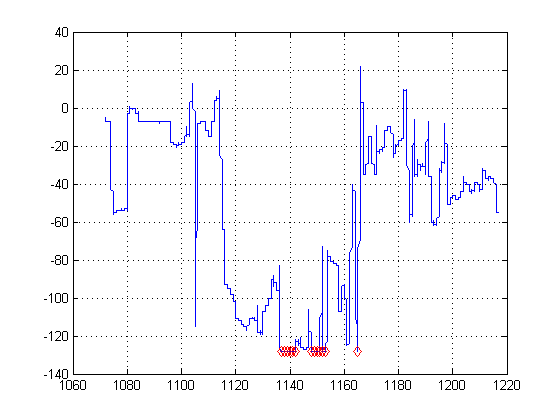
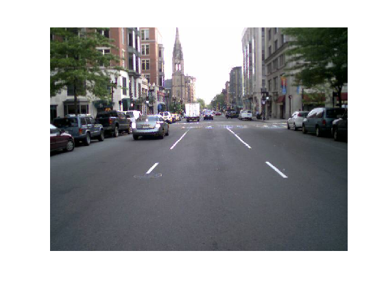
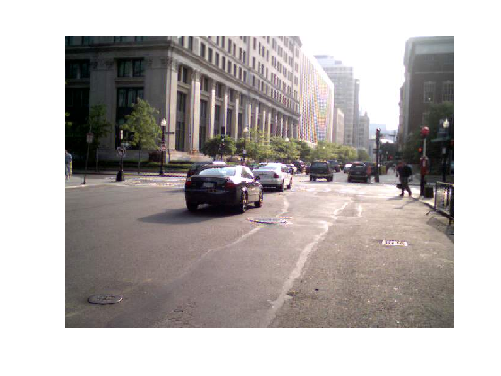
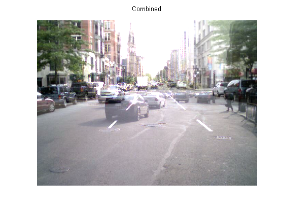

整数演算
このデモでは、信号とイメージの整数データに対して演算を実行する例を示します。
目次
整数信号データの読み込み
8 ビットと 16 ビットのデータ A から D を使用する 4 つの計測器から信号を取得し、計測データセットを読み込み、int8、int16、uint16 として保存します。時間は uint16 として格納されています。
load integersignal % Look at variables whos Signal1 Signal2 Signal3 Signal4 Time1
Name Size Bytes Class Attributes Signal1 7550x1 7550 int8 Signal2 7550x1 7550 int8 Signal3 7550x1 15100 int16 Signal4 7550x1 15100 uint16 Time1 7550x1 15100 uint16
データのプロット
最初に 2 つの信号をプロットし、信号の範囲を確認します。
plot(Time1, Signal1, Time1, Signal2); grid; legend('Signal1','Signal2');

int8 の値を確認します。信号が表す実際の物理的な値 (例: 電圧) を計算するためにこれらの値をスケーリングする必要があります。
データ処理
+、-、*、/ など、整数に対して標準の演算を行うことができます。たとえば、Signal1 と Signal2 の和を計算してみます。
SumSig = Signal1 + Signal2; % Here we sum the integer signals.
信号の和をプロットしてどこで飽和するかを確認しましょう。
cla; plot(Time1, SumSig); hold on; Saturated = (SumSig == intmin('int8')) | (SumSig == intmax('int8')); % Find where it has saturated plot(Time1(Saturated),SumSig(Saturated),'rd');grid; hold off;
信号が飽和している箇所をマーカーで示します。
整数イメージ データの読み込み
次に、いくつかのイメージ データの演算を見ていきます。
street1=imread('street1.jpg'); % Load image data street2=imread('street2.jpg'); whos street1 street2
Name Size Bytes Class Attributes street1 480x640x3 921600 uint8 street2 480x640x3 921600 uint8
イメージは uint8 データの 3 平面として格納された 24 ビット カラーであることがわかります。
イメージの表示
1 枚目のイメージを表示します。
cla; image(street1); % Display image axis equal; axis off
2 枚目のイメージを表示します。
image(street2); % Display image axis equal; axis off
イメージのスケーリング
倍精度の定数でイメージをスケーリングすることができますが、整数として格納されたイメージを保つことができます。たとえば、以下のようになります。
duller = 0.5 * street2; % Scale image with a double constant but create an integer whos duller
Name Size Bytes Class Attributes duller 480x640x3 921600 uint8
subplot(1,2,1); image(street2); axis off equal tight title('Original'); % Display image subplot(1,2,2); image(duller); axis off equal tight title('Duller'); % Display image

イメージの加算
2 つのストリートのイメージを加えてゴーストのような結果を表示します。
combined = street1 + duller; % Add |uint8| images subplot(1,1,1) cla; image(combined); % Display image title('Combined'); axis equal; axis off